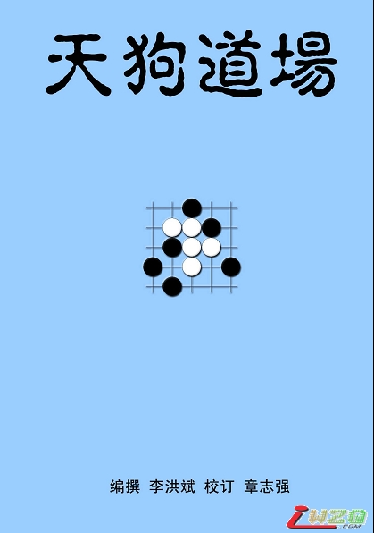

《天狗道场题解》李洪斌编撰、章志强修订版爱五子棋网首发
#1 《天狗道场题解》李洪斌编撰、章志强修订版爱五子棋网首发 作者：雨一直下 发表时间：2011-8-24 15:50:51
受李洪斌老师委托，将天狗道场题解发一下，同学们可参考。话不多说，直接发文件，大家可按需下载。觉得有用的欢迎送花花哈~~~
［ 被感动的人 于 2011-8-24 15:59:04 时花20金币送鲜花一朵］

［此帖子已被 有志青年 在 2011-8-24 16:03:54 编辑过］
［ 屏蔽 于 2011-8-24 16:10:38 时奖励此帖[金币加 100 威望加1］
［ 七步诗 于 2011-8-24 16:12:14 时花20金币送鲜花一朵］
［ 白河愁 于 2011-8-24 16:21:28 时花20金币送鲜花一朵］
［ 华夏使者 于 2011-8-24 16:22:53 时花20金币送鲜花一朵］
［ 天籁之琴 于 2011-8-24 16:30:46 时花20金币送鲜花一朵］
［ 丹尼 于 2011-8-24 16:34:29 时花20金币送鲜花一朵］
［ 堂堂 于 2011-8-24 16:39:30 时花20金币送鲜花一朵］
［ 隐藏菜系 于 2011-8-24 16:54:26 时花20金币送鲜花一朵］
［ 一侠客一 于 2011-8-24 18:10:18 时花20金币送鲜花一朵］
［ 中中 于 2011-8-24 18:30:31 时花20金币送鲜花一朵］
［ 失落刀 于 2011-8-24 18:41:31 时花20金币送鲜花一朵］
［ 古尔丹 于 2011-8-24 19:56:50 时花20金币送鲜花一朵］
［ 海湾浪琴 于 2011-8-24 20:08:55 时花20金币送鲜花一朵］
［ 以和为贵 于 2011-8-24 20:08:57 时花20金币送鲜花一朵］
［ nara 于 2011-8-24 20:29:29 时花20金币送鲜花一朵］
［ 雅匪 于 2011-8-24 21:07:55 时花20金币送鲜花一朵］
［ 路痴 于 2011-8-24 21:14:19 时花20金币送鲜花一朵］
［ 小红眼镜 于 2011-8-24 21:24:25 时花20金币送鲜花一朵］
［ 第五象限 于 2011-8-24 21:43:30 时花20金币送鲜花一朵］
［ 河北穿云 于 2011-8-25 12:52:49 时花20金币送鲜花一朵］
［ 被感动的人 于 2011-8-25 13:44:58 时花20金币送鲜花一朵］
［ aabb 于 2011-8-25 14:05:42 时花20金币送鲜花一朵］
［ 江西五子 于 2011-8-26 14:46:14 时花20金币送鲜花一朵］
［ 傀儡 于 2011-8-30 2:04:00 时花20金币送鲜花一朵］
［ 紫露雨荷 于 2011-9-1 18:56:42 时花20金币送鲜花一朵］
［ 吉小鼠 于 2011-9-2 2:59:56 时花20金币送鲜花一朵］
［ 闫荣辉 于 2011-9-4 18:45:09 时花20金币送鲜花一朵］
［ 陶涛业余 于 2012-6-6 21:35:55 时花20金币送鲜花一朵］
［ 棋空同学于 2013-10-3 9:00:14 时花20金币送鲜花一朵］
［ 满天星同学于 2013-10-3 9:25:42 时花20金币送鲜花一朵］
［ 满天星同学于 2014-7-30 15:31:51 时花20金币送鲜花一朵］
［ 满天星同学于 2014-7-30 15:31:51 时花20金币送鲜花一朵］
［ 满天星同学于 2014-7-30 15:31:51 时花20金币送鲜花一朵］
［ 满天星同学于 2014-7-30 15:31:51 时花20金币送鲜花一朵］
［ 满天星同学于 2014-7-30 15:31:51 时花20金币送鲜花一朵］
［ 满天星同学于 2014-7-30 15:31:51 时花20金币送鲜花一朵］
［ 满天星同学于 2014-7-30 15:31:51 时花20金币送鲜花一朵］
［ 满天星同学于 2014-7-30 15:31:51 时花20金币送鲜花一朵］
［ 满天星同学于 2014-7-30 15:31:51 时花20金币送鲜花一朵］
#2 Re:《天狗道场题解》李洪斌编撰、章志强修订版爱五子棋网首发 作者：七步诗 发表时间：2011-8-24 16:11:21
下载，学习一下！
#3 Re:《天狗道场题解》李洪斌编撰、章志强修订版爱五子棋网首发 作者：丹尼 发表时间：2011-8-24 16:33:03
太好了，谢谢老师~~#4 Re:《天狗道场题解》李洪斌编撰、章志强修订版爱五子棋网首发 作者：堂堂 发表时间：2011-8-24 16:41:34
有密码？
#5 Re:《天狗道场题解》李洪斌编撰、章志强修订版爱五子棋网首发 作者：屏蔽 发表时间：2011-8-24 16:47:12
木有密码#6 Re:《天狗道场题解》李洪斌编撰、章志强修订版爱五子棋网首发 作者：隐藏菜系 发表时间：2011-8-24 17:03:39
实在是精品。如果印刷成书我也会买的。
想当年，专门从上海棋社买了一本天狗，那时候多渴望有本答案书（当时还是软件盲）。。。转眼间自己已经不需要了，不过还是下载收藏。没事的时候拿出来膜拜一下。
#7 Re:《天狗道场题解》李洪斌编撰、章志强修订版爱五子棋网首发 作者：小元 发表时间：2011-8-24 17:35:46
学习
#8 Re:《天狗道场题解》李洪斌编撰、章志强修订版爱五子棋网首发 作者：玩不过就跑 发表时间：2011-8-24 19:25:27
这个一定要顶
#9 Re:《天狗道场题解》李洪斌编撰、章志强修订版爱五子棋网首发 作者：孙弈淏 发表时间：2011-8-24 19:45:16
谢谢#10 Re:《天狗道场题解》李洪斌编撰、章志强修订版爱五子棋网首发 作者：nara 发表时间：2011-8-24 20:01:41
这个是好东西,要顶.#11 Re:《天狗道场题解》李洪斌编撰、章志强修订版爱五子棋网首发 作者：以和为贵 发表时间：2011-8-24 20:12:49
强烈支持精品！#12 Re:《天狗道场题解》李洪斌编撰、章志强修订版爱五子棋网首发 作者：雅匪 发表时间：2011-8-24 21:08:24
支持
#13 Re:《天狗道场题解》李洪斌编撰、章志强修订版爱五子棋网首发 作者：连心 发表时间：2011-8-24 21:10:40
支持
#14 Re:《天狗道场题解》李洪斌编撰、章志强修订版爱五子棋网首发 作者：小红眼镜 发表时间：2011-8-24 21:37:22
 这个绝对要支持~
这个绝对要支持~
#15 Re:《天狗道场题解》李洪斌编撰、章志强修订版爱五子棋网首发 作者：自来水 发表时间：2011-8-24 23:10:59
看了下发现很不错
#16 Re:《天狗道场题解》李洪斌编撰、章志强修订版爱五子棋网首发 作者：如火流年 发表时间：2011-8-25 0:58:50
134页，如果打印的话（双面）加装订应该是10块钱左右。。。#17 Re:《天狗道场题解》李洪斌编撰、章志强修订版爱五子棋网首发 作者：百无禁忌 发表时间：2011-8-25 7:27:24
支持#18 Re:《天狗道场题解》李洪斌编撰、章志强修订版爱五子棋网首发 作者：yidefei 发表时间：2011-8-25 10:54:33
非常不错，可惜不能打印。（或者另想方法）
#19 Re:Re:《天狗道场题解》李洪斌编撰、章志强修订版爱五子棋网首发 作者：有志青年 发表时间：2011-8-25 10:59:22
引用：pdf可以打印的撒
原文由 yidefei 发表于 2011-8-25 10:54:33 :非常不错，可惜不能打印。（或者另想方法）
#20 Re:《天狗道场题解》李洪斌编撰、章志强修订版爱五子棋网首发 作者：河北穿云 发表时间：2011-8-25 12:57:22
密码是什么啊？
#21 Re:《天狗道场题解》李洪斌编撰、章志强修订版爱五子棋网首发 作者：五子酷 发表时间：2011-8-25 14:15:33
非常好的东西，能买到书就更好了！#22 Re:《天狗道场题解》李洪斌编撰、章志强修订版爱五子棋网首发 作者：伤情路 发表时间：2011-8-25 15:42:04
好东西，下载来学习一下
#23 Re:《天狗道场题解》李洪斌编撰、章志强修订版爱五子棋网首发 作者：秋叶散人 发表时间：2011-8-25 17:15:42
围棋有程晓流整理注解的《发阳论》，五子棋有李洪斌大师编注的《天狗道场》，此乃五子棋之幸！前段时间大师的著作《五子棋实战必读：基础定式》我还一次购了5本赠与棋友。
李大师为五子棋所作的贡献有目共睹，要说赞扬的话不缺我这一个。这里我只想提点愚见与大师和棋友共酌：
正如程晓流所讲的：“谁的变化图做得多，谁出错的可能性就大。”——多做多错！呵呵...当然，“不做”则连什么是“错”都不知道，则是更加的“错”！所以我们要感谢大师的辛勤工作。
此次整编的“天狗”我才看到第十题，就发现“解答”中有“白棋没有走出最强防”（如第5题），也有“黑棋没有走出最简攻”（如第10题）。
而且第1题、第7题、第9题、第10题都有不止一种解。一般说来，高水平的死活题如出现双解是按失题论的。当然这是原著的问题。
其实我提的这些都是鸡毛蒜皮的小问题，只是希望能抛砖引玉，让大家关注我们五子棋死活题的最高著作《天狗道场》，共同来完善它。
第5题白棋的最强防：
=======上图对应的爱五子棋谱代码如下，以便你拆解：========
h8i9h9g8j7h7i8k6i6h10g11f8g7f10h6g5j10j9l8l9k9i11j8k8i7l10i5i4m7n6k7
======================================================
第10题黑棋的最简解
=======上图对应的爱五子棋谱代码如下，以便你拆解：========
h8g8h9h10h7j8h6h5i10f11f9e7e9d9e6g5f6d6f10
======================================================
#24 Re:《天狗道场题解》李洪斌编撰、章志强修订版爱五子棋网首发 作者：秋叶散人 发表时间：2011-8-25 17:19:21
顺便介绍一下围棋的《发阳论》：（我觉得挺有意思的，如果五子棋也有与之媲美的名著就太好了。）
《围棋发阳论》，是举世公认的围棋死活方面的最高经典著作。它成书于1713年，原作者是著名的棋家桑原道节(四世井上因硕，名人)。
18世纪初，统治着日本围棋棋界的是“本因坊家”、“井上家”、“安井家”和“林家”这四大门派。为了争夺棋界的领导权，四大门派之间壁垒森严，暗斗激烈。它们对内建立了家庭领导体系和世袭制度，对外则相互争斗衽情报封锁和技术保密。 《围棋发阳论》这本书，就是当时的棋界最高领袖、“井上家”的么、第四代家族首脑桑原道节，为了培养“井上家”的接班人而精心创作的高级教材。书成后，为了防范其他门派“盗”走这部“武林秘籍”，“井上家”实行了严格的保密制度：不但原作当作传传世珠宝而秘藏不露，就连书中的内容，本家庭之中的一般弟子也无从窥其门径。只有极少数年轻有为而又忠诚可靠的“候补接班人”，才得以在家族的亲自传授下，按部就班(注：原书写作“按部就班”)地修习书中的题目。这种一家垄断的状况，一直持续到了近代。 《围棋发阳论》这一书名，来源于日本古代棋家对围棋本质的认识。桑原道节在本书的跋文中就说过：“类似棋的配置、结构那样的东西可以称为‘阴’，而棋形中所隐伏手段则可称为是‘阳’。”故此，“发阳”一词，就可以理解为：从特定的棋形中去发现它的“阳”----即发现那隐伏的、行之有效的手段。 《围棋发阳论》还有一个别名，叫做《不断樱》。樱，是日本的国花，在围棋中象征着手段的精华。所谓“不断樱”，就是喻指书中灿烂缤纷的妙手层出不穷之意。这真是一个贴切而富有诗意的名字!［ 知布 于 2011-8-25 18:04:58 时花20金币送鲜花一朵］
［ 隐藏菜系 于 2011-8-25 18:26:17 时花20金币送鲜花一朵］
#25 Re:Re:《天狗道场题解》李洪斌编撰、章志强修订版爱五子棋网首发 作者：隐藏菜系 发表时间：2011-8-25 18:36:46
引用：
原文由 秋叶散人 发表于 2011-8-25 17:15:42 :而且第1题、第7题、第9题、第10题都有不止一种解。一般说来，高水平的死活题如出现双解是按失题论的。当然这是原著的问题。
其实我提的这些都是鸡毛蒜皮的小问题，只是希望能抛砖引玉，让大家关注我们五子棋死活题的最高著作《天狗道场》，共同来完善它。
天狗题不是“死活题”哈。。五子棋有自己独特的性质，一般来说一道问题很难只有一种解，而且如何定义“多解”和“唯一解”还是个悬而未决的问题。。
而且所谓“最强防”也是个没有准确定义的概念。。。
［此帖子已被 隐藏菜系 在 2011-8-25 18:38:03 编辑过］
#26 Re:《天狗道场题解》李洪斌编撰、章志强修订版爱五子棋网首发 作者：隐藏菜系 发表时间：2011-8-25 18:48:50
今天对照了一下电脑里的题，发现这三道题没有收录，不知道是我搞错了还是编者没有选入。。。
=======上图对应的爱五子棋谱代码如下，以便你拆解：========
h8i8g7g9h7i7i6h6j8j7k8j6k6i10h11e11g11
======================================================
=======上图对应的爱五子棋谱代码如下，以便你拆解：========
h8i9j10j9i10h7i8h6i6i5g6f9f7
======================================================
=======上图对应的爱五子棋谱代码如下，以便你拆解：========
h8i9h9i10g9h10i11i12g6h7j8g8j9k7k8l9k10
======================================================
#27 Re:《天狗道场题解》李洪斌编撰、章志强修订版爱五子棋网首发 作者：连心 发表时间：2011-8-25 21:28:12
真认真。。
#28 Re:《天狗道场题解》李洪斌编撰、章志强修订版爱五子棋网首发 作者：高飞 发表时间：2011-8-25 22:13:55
要密码的呀~~
#29 Re:《天狗道场题解》李洪斌编撰、章志强修订版爱五子棋网首发 作者：用心学习 发表时间：2011-8-25 22:16:28
对李老师出的东西常怀一种敬佩之情。希望更好的东西诞生。
#30 Re:《天狗道场题解》李洪斌编撰、章志强修订版爱五子棋网首发 作者：五连达人 发表时间：2011-8-25 22:38:33
感谢大师
#31 Re:《天狗道场题解》李洪斌编撰、章志强修订版爱五子棋网首发 作者：岑小鱼 发表时间：2011-8-26 12:03:06
必须顶一个...#32 Re:《天狗道场题解》李洪斌编撰、章志强修订版爱五子棋网首发 作者：dyccj 发表时间：2011-8-26 13:45:15
太强了，再次声明，我不是灌水。
#33 Re:《天狗道场题解》李洪斌编撰、章志强修订版爱五子棋网首发 作者：高飞 发表时间：2011-8-27 12:34:47
明显有密码，为什么没密码就知道文章很强大
#34 Re:Re:《天狗道场题解》李洪斌编撰、章志强修订版爱五子棋网首发 作者：屏蔽 发表时间：2011-8-27 12:40:31
引用：
原文由 高飞 发表于 2011-8-27 12:34:47 :明显有密码，为什么没密码就知道文章很强大
你是从哪得出有密码这个结论的……
#35 Re:《天狗道场题解》李洪斌编撰、章志强修订版爱五子棋网首发 作者：白河愁 发表时间：2011-8-27 12:50:16
大概他说的是PDF文件作了密码保护？- -#36 Re:《天狗道场题解》李洪斌编撰、章志强修订版爱五子棋网首发 作者：雨一直下 发表时间：2011-8-27 12:50:20
没有密码呀~~~~#37 Re:Re:《天狗道场题解》李洪斌编撰、章志强修订版爱五子棋网首发 作者：屏蔽 发表时间：2011-8-27 12:57:08
引用：
原文由 白河愁 发表于 2011-8-27 12:50:16 :
大概他说的是PDF文件作了密码保护？- -
这不是必须的么……
算了，天师的智商摆在那里我就不多说啥了。
#38 Re:《天狗道场题解》李洪斌编撰、章志强修订版爱五子棋网首发 作者：dyccj 发表时间：2011-8-27 13:08:14
没有密码吧，只不过要打印的话你要下载个破解软件来搞定，不过这感觉对不住原作者。
#39 Re:《天狗道场题解》李洪斌编撰、章志强修订版爱五子棋网首发 作者：云手 发表时间：2011-8-28 20:42:34
谢谢李老师，张老师#40 Re:《天狗道场题解》李洪斌编撰、章志强修订版爱五子棋网首发 作者：闫荣辉 发表时间：2011-9-4 18:46:35
太强了，鲜花送出。呵呵#41 Re:《天狗道场题解》李洪斌编撰、章志强修订版爱五子棋网首发 作者：霸王龙 发表时间：2011-9-21 12:19:56
学习
#42 Re:《天狗道场题解》李洪斌编撰、章志强修订版爱五子棋网首发 作者：雄鹰王 发表时间：2013-10-1 1:43:18
我想知道这个版本的《天狗道场》为什么只有82+42=124道题，全部天狗道场的习题不是应该是360题吗？这本书里面的124道是如何挑选出来的？#43 Re:雄鹰王【==Re:《天狗道场题解》李洪斌编撰、章志强修订版爱五子棋网首发==】 作者：小红眼镜 发表时间：2013-10-1 15:14:13
引用：如果没记错的话，其他的是两手胜、坂田三手胜和一些VCF。
原文由 雄鹰王 发表于 2013-10-1 1:43:18 :
我想知道这个版本的《天狗道场》为什么只有82+42=124道题，全部天狗道场的习题不是应该是360题吗？这本书里面的124道是如何挑选出来的？
#44 Re:《天狗道场题解》李洪斌编撰、章志强修订版爱五子棋网首发 作者：棋空 发表时间：2013-10-3 9:02:29
原来发表二年了啊，我来晚了，才下载
#45 Re:《天狗道场题解》李洪斌编撰、章志强修订版爱五子棋网首发 作者：平凡人生 发表时间：2013-10-4 7:35:04
#46 Re:《天狗道场题解》李洪斌编撰、章志强修订版爱五子棋网首发 作者：血小贱 发表时间：2014-7-25 10:35:00
多谢#47 Re:《天狗道场题解》李洪斌编撰、章志强修订版爱五子棋网首发 作者：赤色雷霆 发表时间：2014-7-27 0:05:43
谢谢分享！